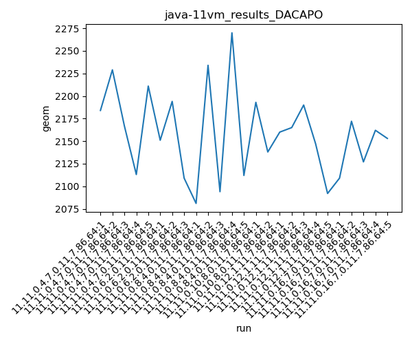
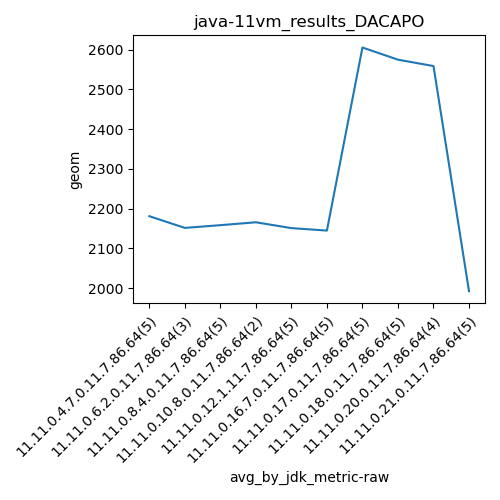
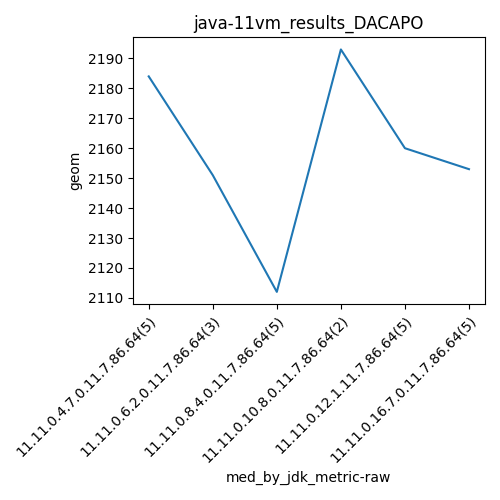
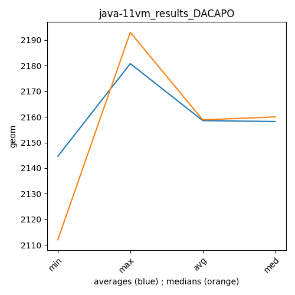

java-11 DACAPO
Context at bottom
/home/jvanek/git/benchmarks-in-nested-virtualisation-toolchain/final_results/vm_results/vm_results_DACAPO
java-11
DACAPO
vm_results_DACAPO
final score
Expected number of java-11 JDKs: 7
1st avgmed_alljdks_metric:
/home/jvanek/git/benchmarks-in-nested-virtualisation-toolchain/final_results/result_processing.py /home/jvanek/git/benchmarks-in-nested-virtualisation-toolchain/final_results/vm_results/vm_results_DACAPO geom False
values: [2184, 2229, 2167, 2113, 2211, 2151, 2194, 2109, 2081, 2234, 2094, 2270, 2112, 2193, 2138, 2160, 2165, 2190, 2147, 2092, 2109, 2172, 2127, 2162, 2153]

Expected number of iterations: 5
final number of values: 25 out of 35
Pass rate: 71.4%
values: (2081, 2270, 2158.28, 2160)

** accuracy from all jdks and runs
more is better
MIN: 2081
MAX: 2270
AVG: 2158.28
MED: 2160
Relative differences 1:
MIN-MAX: 8.0 %
MIN-AVG: 4.0 %
MIN-MED: 4.0 %
MAX-MIN: -9.0 %
MAX-AVG: -5.0 %
MAX-MED: -5.0 %
AVG-MED: 0.0 %
stored to java-11.properties. sort | uniq that!
2nd avgmed_by_jdk_metric:
values: [2180.8, 2151.3333333333335, 2158.2, 2165.5, 2150.8, 2144.6]

values: [2184, 2151, 2112, 2193, 2160, 2153]

values: (2144.6, 2180.8, 2158.538888888889, 2158.2)
values: (2112, 2193, 2158.8333333333335, 2160)

** accuracy from all jdks where runs were avged
more is better
MIN: 2144.6
MAX: 2180.8
AVG: 2158.538888888889
MED: 2158.2
Relative differences 1:
MIN-MAX: 2.0 %
MIN-AVG: 1.0 %
MIN-MED: 1.0 %
MAX-MIN: -2.0 %
MAX-AVG: -1.0 %
MAX-MED: -1.0 %
AVG-MED: -0.0 %
stored to java-11.properties. sort | uniq that!
** accuracy from all jdks where runs were medianed
more is better
MIN: 2112
MAX: 2193
AVG: 2158.8333333333335
MED: 2160
Relative differences 1:
MIN-MAX: 4.0 %
MIN-AVG: 2.0 %
MIN-MED: 2.0 %
MAX-MIN: -4.0 %
MAX-AVG: -2.0 %
MAX-MED: -2.0 %
AVG-MED: 0.0 %
stored to java-11.properties. sort | uniq that!
/home/jvanek/git/benchmarks-in-nested-virtualisation-toolchain/final_results/vm_results/vm_results_SPECJBB
java-11
DACAPO
/home/jvanek/git/benchmarks-in-nested-virtualisation-toolchain/final_results/vm_results/vm_results_RADARGUNs3
java-11
DACAPO
/home/jvanek/git/benchmarks-in-nested-virtualisation-toolchain/final_results/vm_results/vm_results_JMH
java-11
DACAPO
/home/jvanek/git/benchmarks-in-nested-virtualisation-toolchain/final_results/vm_results/vm_results_RADARGUNs1
java-11
DACAPO
/home/jvanek/git/benchmarks-in-nested-virtualisation-toolchain/final_results/vm_results/vm_results_J2DBENCH
java-11
DACAPO
pass rates:
vm_results_DACAPO=71.4%
Context:
- vm_results
- DACAPO